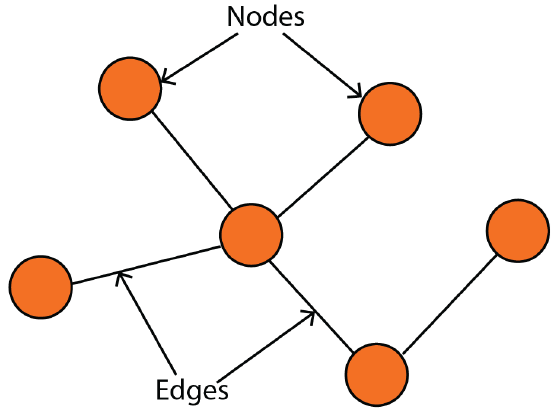
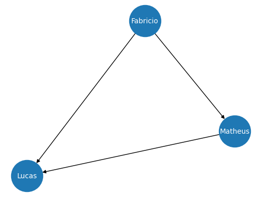
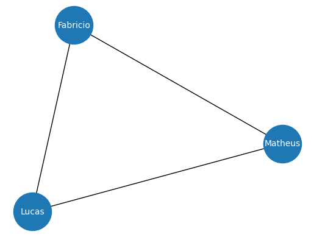
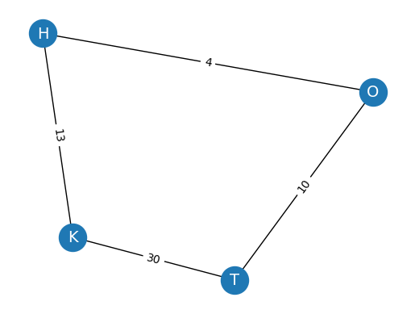
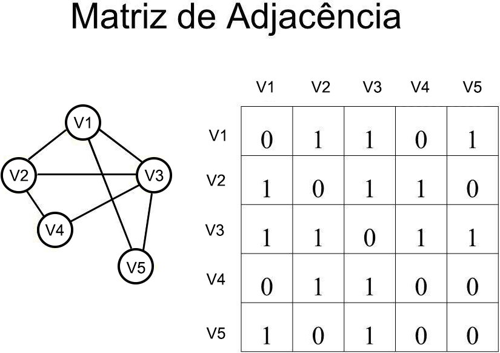
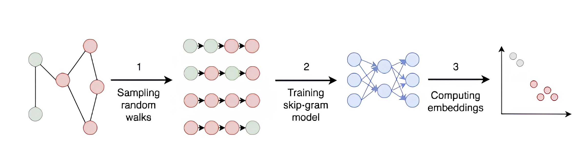
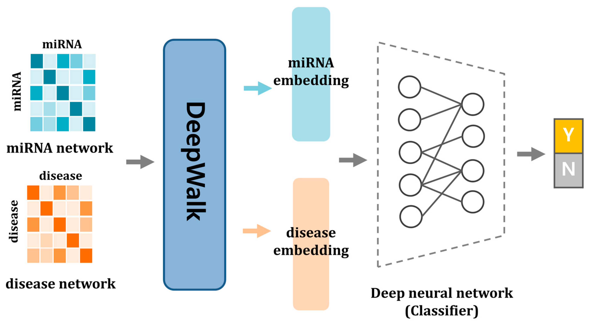
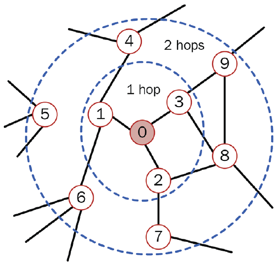
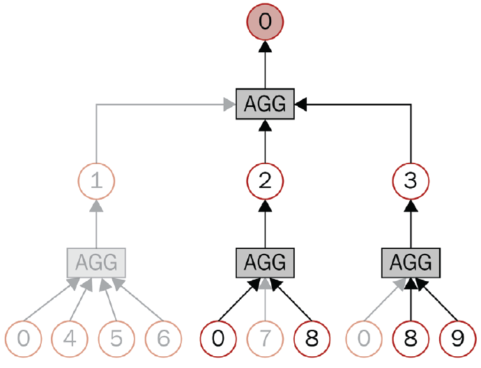

Graph Neural Networks
Universidade Tecnológica Federal do Paraná, Cornélio Procópio (UTFPR-CP)
April 15, 2026
Grafos nada mais são do que representações de uma coleção de nós (vértices) e arestas que conectam esses nós, formando uma estrutura que representa as relações entre os nós.
\[ G = (V, E) \]

A partir de um grafo é possível representar um sistema complexo como: Estrutura de um programa, Sistema Físico e dentra da bilogia temos inúmeros exemplos, Caminhos Metabólicos, Redes Regulatórias, etc .
A partir da união das redes neurais com os grafos podemos resolver diversos tipos de problemas:
Nos Grafos direcionados, cada vértice possue uma direção, ou seja, ele liga os nós em um direção específica, ao contrário dos grafos não direcionados.
# Criando grafo Direcionado
import networkx as nx
G = nx.DiGraph()
G.add_edges_from([('Fabricio', 'Matheus'), ('Fabricio', 'Lucas'), ('Matheus', 'Lucas')])
# Criando um grafo não direcionado
Z = nx.Graph()
Z.add_edges_from([('Fabricio', 'Matheus'), ('Fabricio', 'Lucas'), ('Matheus', 'Lucas')])
# Criando um grafo ponderado
GP = nx.Graph()
GP.add_edges_from([('H', 'O', {"weight": 4}), ('H', 'K', {"weight": 13}),
('K', 'T', {"weight": 30}), ('T', 'O', {"weight": 10})])
labels = nx.get_edge_attributes(GP, "weight")
Um grafo é dito conectado se existe um caminho entra quaisquer dois vértices do grafo, caso contrário, o grafo é dito desconectado.
# Verificando se um grafo é conectado
G = nx.Graph()
G.add_edges_from([(1, 3), (3, 4), (4, 1), (5, 6)])
print(f"O grafo está conectado ? {nx.is_connected(G1)}")# Verificando se um grafo é conectado
Z = nx.Graph()
Z.add_edges_from([('Fabricio', 'Matheus'), ('Fabricio', 'Lucas'), ('Matheus', 'Lucas')])
print(f"Degrau(Lucas) = {Z.degree['Lucas']}")Grau:
\[ C_D(v) = \frac{deg(v)}{|V|-1} \]
Proximidade:
\[ C_C(v) = \frac{1}{\sum_u d(v,u)} \]
Intermediação:
\[ C_B(v) = \sum_{s,t} \frac{\sigma_{st}(v)}{\sigma_{st}} \]
print(f"Grau de Centralidade = {nx.degree_centrality(G)}")
print(f"Centralidade de proximidade = {nx.closeness_centrality(G)}")
print(f"Centralidade de intermediação= {nx.betweenness_centrality(G)}")Uma matriz adjacente representa as arestas do grafo, indicando onde existe uma aresta entre dois nós. A matriz tem tamanho \(n \times n\), onde \(n\) é o número de nós do grafo. O valor de \(1\) na célula \((i,j)\) indica que existte uma aresta entre os nós \(i\) e \(j\), caso contrário o valor indicado é \(0\).

A ideia do Word2Vec é o que vai trazer a base de como funciona os modelos baseados em grafo. O que queremos no fim usando o Word2Vec é transformar uma palavra em um vetor, criando uma nova representação. Esse é um objetivo semelhante ao que queremos fazer no grafo, que é criar representações significativas dele.
\[ v_i \rightarrow z_i \in \mathbb{R}^d \]
Um exmeplo do que pode ser feito é:
\[ vec(ator) = [-2, 3, 1] vec(atriz) = [-1.9, 2, 1.5] vec(homem) = [3, -1, -2] vec(mulher) = [2.5, -2.5, -1] \]
Uma forma de medir a semelhança é usando a similaridade de cosseno:
\[ \text{similaridade de cosseno} = \frac{A \dot B}{||A|| \dot ||B||} \]
Com isso coisas é possível calcular coisas como \(vec(ator) - vec(homem) + vec(mulher) \approx vec(atriz)\)
Duas principais formas de fazer o Word2Vec é com CBOW e Skip-gran. o CBOW usa as palavras e o contexto ao seu redor para predizer uma palavra. Enquanto o Skip-gran tenta predizer o contexto a partir de uma palavra.
Skip-gran é implementado utilizando um par de palavras \((input, contexto)\), na qual o \(contexto\) é a palavra que queremos predizer.
Dado o tamanho do vetor de contexto \(C\), queremos maximizar a probablidade de ver o contexto dado a palavra de input:
\[ \frac{1}{N}\sum_{n=1}^N \sum_{-C \leq j \leq C} log p(w_{n+j}|w_n) \]
A probabilidade é computada pelo softmax do embeding do contexto \(h_c\) dado o embedding do input \(h_t\):
\[ p(w_c|w_t) = \frac{exp(h_c h_t^T)}{\sum_{i=1}^{|V|}exp(h_i h_t^T)} \]
Um skip-gram possui 2 camadas, uma de projeção linear com a matriz de peso \(W_{embed}\), que recebe o one-hot encoded das palavras e depois uma camada densa com a matriz de pesos \(W_{output}\).
Então temos os passos:
O objetivo de criar representações uteis se mantem com DeepWalk, mas ao invés de usar palavras, usamos nós. A partir disso usamos um algoritimo conhecido como random walk para gerar sequências significativas dos nós, que funcionam como sequência.
Toda a ideia consiste em o Random Walk serem sequências produzidas apartir da escolha aleatória dos vizinhos a cada etapa. Então se os nós costumam aparecer em conjunto isso indica que eles são proximos de alguma forma.
DeepWalk nada mais é do que a combinação do Random Walk com o Word2Vec

Referência: https://www.mdpi.com/2227-9059/13/3/536

Até agora consideramos apeans a topologia do grafo. Contudo, os grafos tendem a ser mais ricos do que apenas conexões, tanto os nós, quanto as arestas, podem ter features.
Para isso vamos usar o dataset Cora, que representa 2708 publicações, onde a conexão são as referências. Cada publicação é descrita como um vetor binario de 1433 palavras unicas. O objetivo é classificar o nó em uma das 7 categorias.
No modelo tradicional de rede neural podemos fazer \(h_A = x_A W^T\), onde \(x_A\) era o input do vetor de \(A\) e \(W\) era a matriz de peso. Qual o problema, em um grafo os vetores de entrada são as features dos nós, isso significa que os nós estão completamente separados um dos outros. Para usar a informação da topologia e ao mesmo tempo das features, precisamos olhar para sua vizinhança.
Graph Linear Layer:
\[ h_a = \sum_{i \in \mathcal{N}_A} x_i W^T \]
Por questão de eficiência como temos a matirz adjacência é muito mais simples e rápido computar:
\[ H = \widetilde{A}^T X W^T \]
Em que \(\widetilde{A} = A + I\), para computar o próprio nó.
class GNNLayer(torch.nn.Module):
def __init__(self, dim_in, dim_out):
super().__init__()
self.linear = Linear(dim_in, dim_out, bias=False)
def forward(self, x, adjacency):
x = self.linear(x)
x = torch.sparse.mm(adjacency, x)
return xEsse conceito foi introduzido por Kipf e Welling em 2017, a ideia é criar uma variante da CNNs para as GNNs. Assim como no caso das CNNs, as GCNs se tornaram as redes de GNN mais populares.
O nosso modelo tem uma limitação muito evidente, vamos verificar novamente como é feito o cálculo:
\[ h_i = \sum_{j \in \mathcal{N}_i} x_j W^T \]
Perceba que não é levado em consideração o número de vizinhos, ou seja se um nó possui 1 vizinho e outro 100, não existe uma normalização, logos os valores vão ficar muito discrepantes.
Uma forma de resolver esse problema é simplesmente normalizar pelo degrau do nó.
\[ h_i = \frac{1}{deg(i)} \sum_{j \in \mathcal{N}_i} x_j W^T \]
Para transformar aquela normalização em multiplicação de matrizes, utilizamos a matriz degrau, que conta o número de vizinhos por nó. Com isso existe duas formas de normalização:
A GCN utiliza uma normalização híbrida, com isso temos a GCN final:
\[ H = \widetilde{D}^{-\frac{1}{2}} \widetilde{A} \widetilde{D}^{-\frac{1}{2}} X W^T \]
As GATs são uma melhoria teórica das GNNs. Além de uma normalização estática, ela propõe fatores de ponderação calculados pela importância de cada nó usando self-attention.
Podemos chamar esses fatores de ponderação de scores de atenção \(\alpha_{ij}\), com isso temos o graph attention:
\[ h_i = \sum_{j \in \mathcal{N}_i} \alpha_{ij} W x_j \]
Os scores de atenção calcula a importância entre o nó central \(i\) e o vizinho \(j\). Na camada de atenção do grafo, isso é representado pela concateção dos vetores \([Wx_i || Wx_j]\):
\[ a_{ij} = W_{att}^T[Wx_i || Wx_j] \]
Após isso é aplicado uma função de ativação LeakyRelu e uma softmax:
\[ e_{ij} = LeakyRelu(a_{ij}) \alpha_{ij} = softmax(e_{ij}) = \frac{exp(e_{ij})}{\sum_{k \in \mathcal{N}_i} exp(e_{ik})} \]
Como já vimos na aula passada normalmente não usamos self-attention e sim multi-head attention. Existe duas formas de fazer isso na GAT:
Uma regra simples para saber qual usar é: Se está em uma camada intermediaria utilize concateção, quando é a última camada da rede então média.
Uma segunda versão do GAT foi proposta (Brody et al. 2021) para permitir uma maior expressão da GAT, isso porque ao invés de aplicar a atenção na transformação linear do input ela é aplicado depois, assim fica:
Antes:
\[ \alpha_{ij} = \frac{exp(LeakyRelu(W_{att}^t [Wx_i||Wx_j]))}{\sum_{k \in \mathcal{i}} exp(LeakyRelu(W_{att}^t [Wx_i||Wx_k]))} \]
Depois:
\[ \alpha_{ij} = \frac{exp(W_{att}^t \dot LeakyRelu(W[x_i||x_j]))}{\sum_{k \in \mathcal{i}} W_{att}^t \dot exp(LeakyRelu(W[x_i||x_k]))} \]
GraphSAGE (Hamilton et.al 2017) é uma GNN feita para lidar com grandes grafos. Na biologia normalmente temos que lidar com escabalabidade, por causa da quantidade de dados que temos. Contudo tanto GCN, quanto GAT não são preparados para isso. GraphSAGE traz duas ideias novas:
Nas primeiras aulas falamos sobre os batches, e como os otimizadores utilizam eles. Contudo, a maior parte dos datasets daquelas redes neurais são fáceis de extrair um batch, no caso de um dado tabular temos uma linha, no caso de imagens temos uma imagem, etc. Como realizar amostragem a partir de um grafo ?
A ideia consiste 2 etapas: 1° quando fazemos o embedding the nó, usamos apenas seus vizinhos. Isso significa que para computa-los só precisa dos vizinhos diretos (1 hope), se a GNN tiver 2 camadas então precisa dos vizinhos dos vizinhos (2 hops) e assim por diante.

Contudo, a computação do grafo se torna muito grande a medida que aumenta o numero de hops e se o degrau do nó for muito elevado. Para o segundo caso uma forma de resolver é fazendo amostragem de vizinhos:

A operação de agregação é somente para verificar qual operação usar para computar os embeddings, no artigo original 3 operações foram apresentadas:
Vamos usar o agregador da média:
\[ h_i = \sigma(W \dot mean_{j \in \mathcal{N}_i}(h_j)) \]
Curso Redes Neurais - GNNs | Lucas Otávio